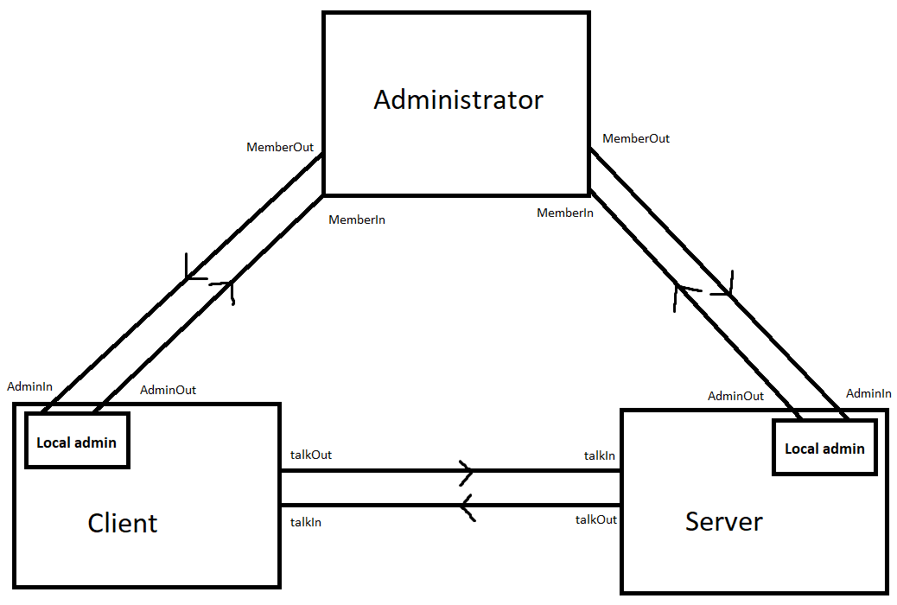

Koga
One year
To think we need a way to think, to communicate we need a way to communicate.
I've been working on this project a decent amount of the past year of 2024. It's a programming language and abstract operating system, somewhat akin to c and unix. I haven't exactly hit any feature milestone, just reflecting on where the project is after a year. If you're interested in the syntax, go and check it out here. Reading this page will help understand the syntax, but reading the syntax page will help understand this.
Motivation
The original goal started from wanting to make Java a better language to write games, the underlying goal being wanting to not learn C++. There were three main changes to Java that I wanted:
- Writing sources that don't allocate
- Writing sources that have their own memory space
- More control over memory and rubbish collection
The idea here being to reduce allocations, grouping allocations that will be used together, and more customisation over allocation strategies. It's entirely likely that some JVMs do these things under specific conditions, but I want it as part of the language.
At this point maybe it's no longer like Java and is instead its own thing, but I think it will feel familiar to Java devs. The only languages I really know and have used are Java, kotlin, and Typescript. That must have some influence over my design and tastes. I hope this project can be a redemption for my webdev sins.
Audience
A lot of the hip languages these days are slight derivations of C mixed with another language or aimed at a specific group of C devs, like toddlers or furries.
I've done something slightly different, this is a derivation of Java... mixed with C... for Hatsune Miku fans.
I might say its aimed at people that want to program in C, but that don't want to program in C.
The key point here is our programmers are interested in tech quality, they're not Googlers. They're typically mid 20s to late 30s, fresh out of a mental hospital, probably maintained a javascript SPA, maybe a microservices system, probably used scrum. They're capable of understanding a brilliant language and we want to use them to build good software without losing their minds. So, the language that we give them has to be joyful for them to not retire to a farm and raise chickens.
Ideology/Philosophy/Goals
The language comes with an abstract machine and communication protocols.
Holistic thinking. There is a saying in reference to OOP about wanting a banana but getting a gorilla holding a banana and the entire jungle. I'm going to change the saying slightly, and forget the reference to OOP. Take a banana from a gorilla and you change the entire jungle. Or perhaps, give a child to a gorilla, and you change the entire universe.
You have to think about a lot when doing anything, small actions can completely change your destiny. It's practically impossible to think about it all. This is why most things in this world continually observe and act, you just can't see that far into the future. Programming languages are awkward, you don't really have the ability to keep adjusting to be within the lines. I think there are some guidelines that can still help though:
- Limits are useful. Self-imposed limits can stop things spiralling out of control, despite good intentions. If web browsers had a reasonable max size for Javascript in a page, we might be in a much healthier spot technologically speaking.
- Don't optimise. I consider this to be do what is correct, not what is performant.
- Simple syntax. The more syntax you have, the more you need.
Control over the underlying machine. Primitives like Ints, Booleans, Ifs, Whiles etc. should be defined using the language. This is kinda saying that you should have access to assembly programming within the language.
Protocols are defined in the language. I like the style of implementing interfaces in Java. Does something similar exist for operating system or internet protocols? I'm not sure. Is it possible? I'm also not sure, but it's definitely a goal.
The language should be easy to extend. The JVM class file does make extending the language fairly straight forward. There is maybe one problem, compilation becomes more complicated as the Java compiler isn't able to compile these new source class types. This can be solved, and is, but it makes the tooling more complicated. I want to have a compiler that designed to have custom parsers added to it.
Learnable. More than just easy to learn, I want this to be one of the best ways of learning programming. Exposing the abstract machine, communication protocols, using custom runtimes, allowing custom parsers, all these things will help teach development in a natural and integrated way.
Runtime data is valuable. Bounds checking good. Tracking allocations good. Not a huge fan of the current compiler culture.
Naming. Naming is very important, though also quite difficult, and something that is rather a mess in the tech world. Operating system, kernel, process, class, intermediate representation, thread, frame, memory, pointer, debugger, driver, asynchronous, assembly. Are these really the best words to use? Maybe. This project shouldn't be scared to use a new name for things even if the previous name is very established.
Some backwards compatibility. Backwards compatibility has pros and cons. I don't think aiming to be completely backwards compatible is ideal, reasonable deprecation windows seems best. A project should eventually mature to a point that not much is being deprecated.
Sustainability A language and ecosystem usually start simple but as users gain experience and the devs get better with the compiler, demands start changing and this simplicity can quickly go away, removing the path behind you.
You Need to be careful who you design things for too. If you design features for specialist server hosting providers, the introduction of these features can make hosting more difficult for individual server hosters. This may lead to a greater percentage of people using server hosting providers, and then more features catered for them, and it then continues.
Ecosystem/Culture. There is a lot of flexibility given to the developer with this language. You can make primitives, interfaces, protocols, member administrators, system administrators, and custom parsers. If everyone were to do this, it could completely kill a cooperative productive culture. I don't particularly want everyone making their own Int class to share, their own display protocol to share and so on. Things will have to be centrally standardised and coordinated. What you can do though is make your own Int for just your own application for example. I think the use case will be rare, but the ability to do so is there so that you won't have to depend on the central body to listen to and implement the use case. You can then make your case for this to be standard where it can be holistically looked at. So while you have the ability to customise a lot of things, the intent is that you shouldn't be allowed to easily share it for others to use.
Design
Documents
These are akin to the JVM class. Four types so far: Host (has its own byte space), Hosted (exists in a Host), Interface, and Protocol (though this isn't really designed yet). The documents should contain all the necessary information for a system to use that document type. For example, Host and Hosted have fields, methods, and a symbol table.
Machine
A simple logic machine. The processor has a small amount of registers for things fundamental to processing e.g. the instruction, task, object, runtime table. The machine has a large array of bytes, known as the byte space, space, or memory. It's currently paged, but we won't go into that. Instructions operate on the byte space and occasionally the registers. The instructions are heavily inspired by the RICV-V set, though I haven't got round to adding all the instructions yet e.g. maths, atomic, parallel etc. It's designed with the value of being compiled to a real machine over being interpreted. There is nothing else than this really. No types, no stack, no threads/frames, no arrays. Things could change, but I think this is the essence of an abstract machine.
Language
Core
At the core of the language is two interfaces: Compilable and Usable. An example of a Compilable would be an ArrayList, and examples of Usable would be Int, Boolean, If, While. A Compilable is given a DocumentBuilder which it uses to add fields, methods, symbols. A Usable has a bit more going on, with methods like declare, construct, invoke. It's given a MethodBuilder, which is used to add method local fields, add instructions, add instruction addresses etc.
Parsers
Every Koga file starts with describing the parser for this file e.g. parser: system;
The compiler is a collection of parsers registered by name.
This is how you can extend the language to your own tastes.
It also allows parser versioning on an individual level.
This means when there is a new parser version, you don't have to update every file at once, you might leave a few difficult files on an old version.
Usables
These are written in terms of the machine and document methods. These can define variables, which are either bytes or instruction addresses. They can define constructors and methods which will then define a sequence of machine instructions to add to the document method builder.
parser machine;
Int {
byte[4] val;
constructor Int(b32 imm) {
l(ADD, II, LDA, val, IL, 0d0, AL, imm);
}
plus(b32 imm) {
l(ADD, AI, LDA, val, LDA, val, AL, imm);
}
plus(Int in) {
l(ADD, AA, LDA, val, LDA, val, ADA, in.val);
}
}
parser hosted;
...
main() {
Int x 0;
Int y 1;
x plus(5);
x plus(y);
}
Take this small example of an Int and its usage.
Int x 0 - this statement constructs a variable x using the Int usable. It runs the matched Int constructor i.e. a no name constructor that takes a single immediate argument.
In this case, when compiling the main methods first statement, 4 bytes will be allocated along with the one instruction l(ADD, II, LDA, val, IL, 0d0, AL, imm);
Int methods can now be called on the variable x, in essence doing the same thing as the constructor e.g. x plus(5);.
More examples and explanations over at the syntax documentation.
The instruction syntax probably looks a bit alien, but it is easy to understand!
I want to note that operator overloading exists, so x + 5; works too.
Misc
Some other small things to note in the language is the absence of access modifiers, packages, and return types. I could very well go back on these decisions.
Access modifiers: Host objects own their byte space and so are private by default with no ability to make them public. For hosted sources, lets take ArrayList as an example, I think it's perfectly reasonable to have the internals of ArrayList exposed to someone who deliberately decided to use ArrayList. Of course if you use and couple to these internals, you may struggle when updated to a new ArrayList version, but it's your choice to make this tradeoff. I'm sure it makes sense in some cases.
Return types are useful when you always have one thing to return. In cases of nothing or more than one, they are more painful (I think void is ugly syntax). This choice also plays well with the concurrency model chosen, which is described later.
Packages and modules: I don't think I would lose much if packages (and modules) were removed from Java. The only use I get from packages is the namespacing, and that seems easily achievable with, well, just names. I do like the reliable configuration aspect of modules, and I think it must be achievable without them. It is worrying that many languages omitting modules add them into the language as it matures. It's often a rather painful process.
Communication
I've only briefly designed the interprocess communication, it's quite likely to change. The brief design is just to use shared memory, and then read/write to your local memory space that is linked to another process.
How its currently implemented is member A will ask the system to connect it to member B using protocol p and pages x and y. The system will tell B there is a connection request from A for protocol p. B might send back, okay, here are pages i, j; The system will link pages x and y to i and j, and then tell A that it's connected to B.
The Internet
The internet being a thing makes communication awkward. You now have two addresses, your local system address and your internet address, along with 2 different ways of communicating. It would be nice if these could be unified. This isn't to say it should be transparent whether you are messaging a local process or a remote process. It's to say that you do so in the same style and with the same address scheme.
There's not been much thought put into this right now, but the idea is to try morphing the internet protocol into something that works well locally. The key thought is to rethink how we think about packets. We tend to think of them as an incoming stream, and well there's nothing to suggest otherwise. Instead, what if the packets target specific slots. For example, when X communicates with Y, they establish slots 0-3 each of size 1024 bytes. A packet would be addressed for Y slot 2, instead of just Y.
Now the internet protocol is just like copying some bytes to a specific memory address. This is how the local communication works too. You establish slots of memory to share with each other, except locally they can be much bigger e.g. multiple GBs. There is a chance the ipv6 header can do this, but it involves stealing some of the current headers e.g. flow label, next header.
Allocator/Administrator
Each process, which is called member, has its own administrator. This handles talking with the parent administrator e.g. a system administrator that handles paging (and more). It's also responsible for the memory allocation, un-allocating, concurrency things, and some more stuff. You might describe it as the runtime.
There is a religious statement "made in the image of God". I think that this somehow helps understand the design here. Another way might be "recursive", but it omits the power of the structure. A member is made in the image of a system. Yet it's a system that runs these members. If you had a picture of a running member and then zoomed out to a picture of the running system "above it", both pictures would look similar. There would be a bunch of things that are coordinating with each other and above through an administrator.
System / Operating system
I'll be using the name member instead of process, member as in a member of the system.
I'll also be using the name Administrator instead of kernel, I think it conveys the responsibilities better.
In a similar fashion to unix's stdin and stdout streams, every member is initialised with an SystemIn and SystemOut stream.
These are like system calls, used to communicate with the Administrator to allocate new pages, schedule cpu time, make connections with other members etc.
Okay I lied about SystemIn and SystemOut being streams. They are arrays of Inputs and Outputs respectively, with some space to track what array slot is in use or free. Are streams good ways of modelling things? I fail to see the appeal, especially when thinking about concurrency. Perhaps I'll see the reason for them as I progress, but for now I will assume they don't make much sense.
I'm gonna say it, I dislike unix stdin and stdout. I'm not talking about the fact they are streams, it's their lack of structure. The only thing you can reliably do with them is print the characters. The idea of stdin and stdout to talk with a member (process) is good though, I want to keep it but as a separate protocol not default behaviour. Instead of using character streams, I want something that is more like HTML. This allows the members to encapsulate their state, and the client (i.e. terminals) can have richer uis (e.g. forms). You would still be able to write scripts to automate things too. Below is a diagram to try and convey the architecture
A goal is to remove the need of having 2 orchestration systems, 6 cloud systems, 3 operating systems, 4 container systems, 18 languages, each with 15 frameworks. All so we can run some code and have it talk with some other code? This is where big potential sits for new languages / systems, is there a simple solution out there?
Concurrency
Does a good concurrency model exist? There's a lot of theoretical discussions (arguments) around concurrency and every language looks rather different to each other. Yet are there different results? It does look like every language somehow manages just fine with their style.
My understanding of concurrency models: It all starts with the concept of a task. Everything is simple, the task is created, it runs and completes. What about a task running another task? Here is where we branch into two areas. What properties do we want these new tasks to have? Should they have low latency, high throughput? Is the ability to run multiple tasks needed or at most one? I'm familiar with three popular strategies:
1. Threads (Stack-based task areas)
Allocate a big area to host all the tasks (using a stack structure) and tasks can easily create subtasks but only the one subtask at a time. Due to only having one active subtask, a task would invoke the subtask, immediately running it when ready. This approach gives you very low latency when creating and running a subtask.
There are some awkward problems though. You're unable to know the maximum task area size, go too small and creating a subtask will break (stackoverflow). You can try resizing but that can have other complications like pointers breaking inside and outside the thread e.g. garbage collectors. You then usually allocate pretty large areas, but this makes creating lots of threads memory expensive. Another problem is you can only have one subtask at a time and so if you want to run two subtasks concurrently, well you have to create another thread, but creating another thread uses a lot of memory You're somewhat locked in to the one subtask style.
2. Single tasks
Each task is only allocated the space it needs for the task. This is slowly to do though because now you need to find the space to allocate for the task. Now you could invoke the subtask yourself, but usually this approach is taken to be able to schedule multiple subtasks concurrently, and so you use a scheduler to invoke the subtasks. This makes it slower to invoke the subtask too. The positive side is that tasks only use the space they need, and you can run multiple of them easily.
Due to the higher cost of running subtasks, you likely want to adapt and have meatier tasks. No longer may you want to invoke iterator.next() 1000 times, instead you might want to have a task that returns the next value and instead of completing, the task will wait to be rescheduled where it can repeat. Going even further, the task might batch return values e.g. 10 at a time.
3. Hybrid - Stack-based virtual/lightweight/carried Threads
This approach plays into the fact that most threads may only use a small amount of the thread space. Here you allocate a big area to share with multiple threads, hosting one at a time. When threads are running, tasks can easily allocate subtasks due to large thread area. When the thread idles, its unmounted, you copy only the used area of the thread area. If it were a thread with three tasks, you only need to copy the total of those three tasks.
Here you have the ability to quickly run and invoke a subtask, and when idle each task is only allocated the space it needs. You still don't have the ability to concurrently run multiple subtasks but threads use less space so creating lots of threads is now an option. The problem here though is the scheduling, you will have to copy the carried thread to the carrier thread and then copy back when idling. This can be optimised in various ways, but that will have other effects like higher latency when running the subtasks. It will also mess with pointers breaking things like rubbish collectors, and fixing these problems will have more effects.
Choice
So what model should be used? I'm going with the single task approach. Conceptually, it's the simplest. The main drawback is performance related, and I'm trying not to let the idea of performance corrupt the programming model. Feels like it should work best with structured concurrency, though all models probably work effectively.
I somewhat lied about choosing the single task design. It's actually more like a dual task, each task has secondary space to run local admin tasks e.g. allocation. For example, if your method were 200 bytes and the local admins largest method were 300, the tasks total size would be 500. This does mean that admin methods can't call admin methods, but that's perfectly fine in my opinion.
Structured concurrency
Once upon a time programmers would write jumps and branches. At least that's what the programmers with grey beards say in-between mentioning retro computer models. It was then argued that these lack meaning, what is the intention behind these jumps? So it was replaced with structured programming in which constructs like "if" and "while" were used instead.
A similar thing is now argued for concurrency, there's a lot of code starting, pausing, continuing, and stopping tasks without the necessary intent behind these actions. Structured concurrency is the idea of making constructs to run multiple tasks. I'm not too familiar with current implementations, but the idea instinctively makes sense. Some examples might be:
- All - run every task concurrently and then wait for a response from every task before continuing
- One - run every task concurrently and then wait for a response from one, then cancel the rest
- repeatUntilFinished - keep rerunning the body tasks until the while task is finished
Async & Await
Not entirely sure if I understand this feature. I don't think the syntax suggests a particular concurrency model. You could await a thread just like you await a single task. I'm also not sure why the "function colouring" is needed, why can't all functions be used both ways?
It also seems like you would want to default to waiting for tasks as that would be the majority of cases, yet languages like typescript default to async. When not awaiting, you're likely running multiple tasks, and probably want structured concurrency, in which case an async keyboard doesn't seem very useful. There's probably something I don't understand here, I'm not going to pay it too much attention, maybe I'll understand it while implementing things.
Generics
I personally think generics are better than templates and that while they are very useful, they are only really useful for a small number of cases e.g. container sources. I want to keep the feature simple enough to handle these cases, and try not to go much further. There's a few interactions with generics in Koga due to the existence of usables and compilables.
- Array<Int> - a usable with a usable generic
- Reference<ArrayList> - a usable with a compilable generic
- ArrayList<Int> - a compilable with a usable generic
- ArrayList<Reference<ArrayList>> - compilable with a usable generic with a compilable generic
A compilable only really uses generics for type checking, it doesn't have access to any of the generic information. However, an ArrayList needs access to the generic's size when allocating the array. For this to work you have to send the information to the ArrayList at runtime. For example, a usable called Usable<T> will contain the size, so you pass this during construction.
A usable, existing only at compile time, has access to the generic information. Therefore, Array<T> can query for the size of T. This is a small lie, the generic must be concrete at compile time (could be used within a generic compilable)
What about a usable with a compilable generic? Well here, looking at the reference example, you can use the generics name to add symbols to the symbol table. For example, you can add a symbol for the class T. Now you can use that symbol to add a runtime table lookup instruction for the size of T (i.e. how much space the type needs, an object with only an Int field would need 4 bytes). The Reference usable does this in its constructor method "new" to allocate the new instance, and also for method invocation.
The generics are pretty undeveloped right now, really only implemented just enough to somewhat work. I think the current idea laid out will stay though.
What's next?
The ultimate goal would be to get the project to a point that others can contribute, preferably in parallel and with low coordination. There's plenty to do to get there though and my opportunity to work on the project will probably shrink.
- Finish the foundations of the language: structured concurrency and the communication protocol are the big two left.
- Get the Document files compiling to run on a virtual risc-v machine. This is important to do early, I want to see features in the language that might make this difficult.
- Start developing out the system protocols and useful interfaces.
- Write the system administrator within the language
- Get the Documents files compiling into a single binary that can run on linux
- GPU programming - this might be solvable with a new parallel logician.
Final words
What do I know really about any of these topics? I still have a decent amount of hair on my head so can't be much.
If you read this far, thanks for reading and I look forward to reading all opinions and feedback!